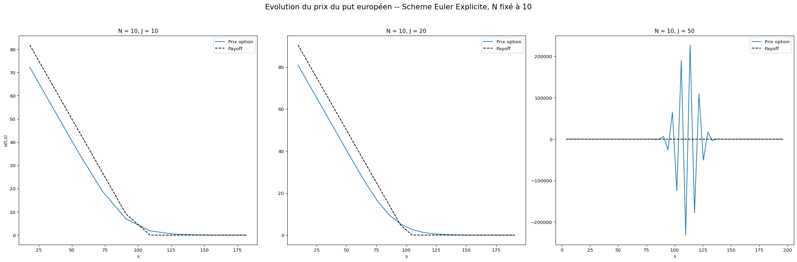
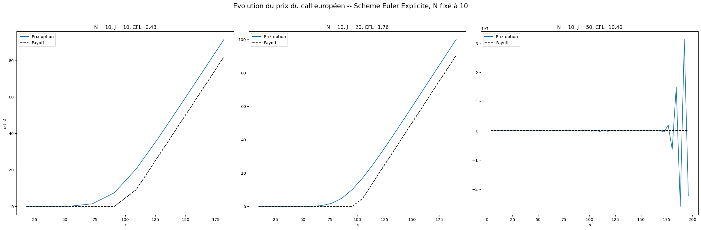
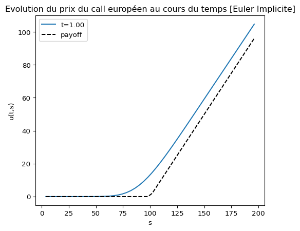

# Package imports
import numpy as np
import matplotlib.pyplot as plt
import numpy.linalg as lng
from scipy.sparse import diags,eye
from abc import ABC, abstractmethod
import scipy.stats as stats
from scipy.sparse import csr_matrix as sparse
from scipy.sparse.linalg import spsolve
import pandas as pd
import time
from pprint import pprintFinite difference Methods for European Options
EDP in finance
paper
m2mo
edp
Introduction
Dans ce tp, nous étudion des schémas aux différences finies pour l’équation de Black-Scholes posée dans les variables primitives, après localisation dans un rectangle dans les variables temps-spot.
Ces schémas nous permettront d’obtenir une approximation numérique de la fonction de prix d’un put européen \(v(t,s)\), avec \(t \in [0,T]\) et \(s \in [S_{min}, S_{max}]\). Cette fonction satisfait l’équation de Black-Scholes sur le domaine tronqué \(\Omega = [0,T] \times [S_{min}, S_{max}]\) :
\[ \begin{cases} \frac{\partial v}{\partial t} + \frac{1}{2} \sigma^2 s^2 \frac{\partial^2 v}{\partial s^2} + r s \frac{\partial v}{\partial s} - r v = 0, \quad (t,s) \in \Omega, \\ v(T,s) = \phi(s) = \max(K - s, 0), \quad s \in [S_{\min}, S_{\max}], \\ v(t,S_{\min}) = K e^{-r(T - t)} - S_{\min}, \quad t \in (0,T), \\ v(t,S_{\max}) = 0, \quad t \in (0,T). \end{cases} \]
Nous considérons la grille discrète suivante : \(h = \frac{S_{max} - S_{min}}{J + 1}\) et \(\Delta t = \frac{T}{N}\), avec \(J\) et \(N\) des entiers positifs, et : - \(s_j = S_{min} + j h\), pour \(j = 0, \ldots, J + 1\), - \(t_n = n \Delta t\), pour \(n = 0, \ldots, N\).
On cherche une approximation \(U_j^n \approx v(t_n, s_j)\) pour \(j = 1, \ldots, J\) et \(n = 0, \ldots, N\).
Les schémas aux différences finies nous permettront de discrétiser l’équation de Black-Scholes du prix d’un put européen sur cette grille. Dans ce TP, nous considérons divers \(\theta\)-schémas numériques pour ce problème: Le schéma d’Euler explicite, puis Euler implicite, et enfin de Crank-Nicolson. On étudie l’erreur de consistance pour ces schémas. Ces schémas conduisent à des relations de récurrence dans \(\mathbb{R}^n\), chaque pas consistant éventuellement à résoudre un système linéaire dans le cas des schémas implicites.
On étudie enfin la convergence de ces \(\theta\)-schémas. On verra apparaître la notion de stabilité conditionnelle (et de condition CFL) pour certains schémas tels que le schéma d’Euler Explicite, et la notion de stabilité inconditionnelle pour d’autres schémas tels que le schéma d’Euler Implicite ou de Crank-Nicolson.
Méthodes numériques
Schéma d’Euler explicite (EE)
Le schéma d’Euler explicite est un schéma basé sur une discrétisation explicite en temps. La discrétisation de l’EDP est basée sur des approximations centrées. Dès lors, on approxime les dérivées partielles de la manière suivante :
\[ \begin{cases} \frac{U_j^{n+1} - U_j^n}{\Delta t} + \frac{1}{2} \sigma^2 s_j^2 \frac{U_{j+1}^n - 2 U_j^n + U_{j-1}^n}{h^2} + r s_j \frac{U_{j+1}^n - U_{j-1}^n}{2 h} - r U_j^n = 0, \quad j = 1, \ldots, J,\quad n = 0, \ldots, N-1. \\ U_j^0 = \phi(s_j), \quad j = 1, \ldots, J. \\ U_0^n = K e^{-r(T - t_n)} - S_{min}, \quad n = 0, \ldots, N. \\ U_{J+1}^n = 0, \quad n = 0, \ldots, N. \end{cases} \]
On peut la réécrire sous la forme matricielle afin d’extraire une solution numérique dite explicite : Sous forme matricielle, le schéma s’écrit :
\[ \begin{array}{l} \frac{U^{n+1} - A U^n}{\Delta t} + A U^n + q(t_n) = 0, \quad n = 0, \ldots, N-1, \\ U^0 = (\phi(s_i))_{1 \leq i \leq J}, \end{array} \]
où
\(A\) est une matrice carrée tridiagonale de taille \(J \times J\). En posant \(\alpha_j = \frac{\sigma^2}{2} \frac{s_j^2}{h^2}\) et \(\beta_j = r \frac{s_j}{2 h}\), les coefficients de la matrice \(A\) sont donnés par :
\[ \begin{cases} A_{j,j-1} = -\alpha_j + \beta_j, \quad j= 2, \ldots, J, \\ A_{j,j} = 2\alpha_j + r, \quad j = 1, \ldots, J, \\ A_{j,j+1} = -\alpha_j - \beta_j, \quad j = 1, \ldots, J. \end{cases} \]
\(q(t_n)\) un vecteur de \(\mathbb{R}^J\) qui dépendent des paramètres du modèle et de la discrétisation spatiale donné par :
\[ q_j(t_n) = \begin{cases} (-\alpha_1 + \beta_1) U_0^n, \quad j = 1, \\ 0, \quad j = 2, \ldots, J-1, \\ (-\alpha_J + \beta_J) U_{J+1}^n, \quad j = J. \end{cases} \]
De fait, on obtient la relation de récurrence explicite permettant de calculer \(U^{n+1}\) en fonction de \(U^n\) :
\[ U^{n+1} = A U^n - \Delta t ( A U^n + q(t_n) ), \quad n = 0, \ldots, N-1, \]
Schéma d’Euler implicite (EI)
Le schéma d’Euler implicite est un schéma basé sur une discrétisation implicite en temps. La discrétisation de l’EDP est basée sur des approximations centrées. Dès lors, on approxime les dérivées partielles de la manière suivante :
\[\begin{cases} \frac{U_j^{n+1} - U_j^n}{\Delta t} + \frac{1}{2} \sigma^2 s_j^2 \mathbf{\frac{U_{j+1}^{n+1} - 2 U_j^{n+1} + U_{j-1}^{n+1}}{h^2} + r s_j \frac{U_{j+1}^{n+1} - U_{j-1}^{n+1}}{2 h} - r U_j^{n+1}} = 0, \quad j = 1, \ldots, J,\quad n = 0, \ldots, N-1. \\ U_j^0 = \phi(s_j), \quad j = 1, \ldots, J. \\ U_0^n = K e^{-r(T - t_n)} - S_{min}, \quad n = 0, \ldots, N. \\ U_{J+1}^n = 0, \quad n = 0, \ldots, N. \end{cases} \]
Dans ce cas, la relation de récurrence s’écrit sous la forme matricielle suivante :
\[ \begin{array}{l} \frac{U^{n+1} - A U^n}{\Delta t} + A U^{n+1} + q(t_{n+1}) = 0, \quad n = 0, \ldots, N-1, \\ U^0 = (\phi(s_i))_{1 \leq i \leq J}, \end{array} \]
où \(A\) et \(q(t_n)\) sont définis comme précédemment. On obtient ainsi la relation de récurrence implicite suivante :
\[ ( I + \Delta t A ) U^{n+1} = U^n - \Delta t q(t_{n+1}), \quad n = 0, \ldots, N-1, \] où \(I\) est la matrice identité de taille \(J \times J\).
Schéma de Crank-Nicolson (CN)
Le schéma de Crank-Nicolson est un schéma basé sur une discrétisation implicite en temps. La discrétisation de l’EDP est basée sur des approximations centrées. Dès lors, on approxime les dérivées partielles de la manière suivante :
\[ \begin{cases} \frac{U_j^{n+1} - U_j^n}{\Delta t} + \frac{1}{2} \left( - \sigma^2 s_j^2 \frac{U_{j+1}^{n+1} - 2 U_j^{n+1} + U_{j-1}^{n+1}}{h^2} - r s_j \frac{U_{j+1}^{n+1} - U_{j-1}^{n+1}}{2 h} + r U_j^{n+1} \right. \\ \quad + \frac{1}{2} \left( - \sigma^2 s_j^2 \frac{U_{j+1}^n - 2 U_j^n + U_{j-1}^n}{h^2} - r s_j \frac{U_{j+1}^n - U_{j-1}^n}{2 h} + r U_j^n \right) = 0, \quad j = 1, \ldots, J,\quad n = 0, \ldots, N-1. \\ U_j^0 = \phi(s_j), \quad j = 1, \ldots, J. \\ U_0^n = K e^{-r(T - t_n)} - S_{min}, \quad n = 0, \ldots, N. \\ U_{J+1}^n = 0, \quad n = 0, \ldots, N. \end{cases} \]
La relation de récurrence s’écrit sous la forme matricielle suivante : \[ \begin{array}{l} \frac{U^{n+1} - A U^n}{\Delta t} + \frac{1}{2} A ( U^{n+1} + U^n ) + \frac{1}{2} ( q(t_{n+1}) + q(t_n) ) = 0, \quad n = 0, \ldots, N-1, \\ U^0 = (\phi(s_i))_{1 \leq i \leq J}, \end{array} \] où \(A\) et \(q(t_n)\) sont définis comme précédemment. On obtient ainsi la relation de récurrence implicite suivante : \[\left( I + \frac{\Delta t}{2} A \right) U^{n+1} = \left( I - \frac{\Delta t}{2} A \right) U^n - \frac{\Delta t}{2} ( q(t_{n+1}) + q(t_n) ), \quad n = 0, \ldots, N-1, \] où \(I\) est la matrice identité de taille \(J \times J\).
Choix d’implémentations
Puisque les schémas implémentés partagent de nombreuses caractéristiques communes, nous définissons une classe de base abstraite SchemeBase qui encapsule les paramètres financiers, la grille discrète, les conditions initiales et aux limites, ainsi que la construction de la matrice \(A\) et du vecteur \(q(t)\). Les schémas spécifiques hériteront de cette classe de base et implémenteront la méthode solve() pour résoudre le schéma numérique particulier.
Trois classes filles seront ensuite définies : SchemeEE pour le schéma d’Euler explicite, SchemeEI pour le schéma d’Euler implicite, et SchemeCN pour le schéma de Crank-Nicolson. Chacune de ces classes implémentera la méthode solve() en fonction de la nature explicite ou implicite du schéma.
Les codes sont retrouvés sur ce lien github github.
class SchemeBase(ABC):
"""
Classe de base pour les schémas numériques de l'équation de Black-Scholes.
"""
def __init__(self, r, sigma, K, T, N, J, Smin, Smax):
# Financial parameters
self.r = r
self.sigma = sigma
self.K = K
self.T = T
# Numerical parameters
self.N = N
self.J = J
self.Smin = Smin
self.Smax = Smax
# Grids
self.dt = T / N
self.h = (Smax - Smin) / (J + 1)
self.s = Smin + self.h * np.arange(1, J + 1)
# Operator
self.A, self.alpha, self.beta = self._build_matrix_A()
def phi(self, s):
"""
Condition initiale (payoff) pour un put européen.
𝜙(s) = max(K - s, 0)
"""
return np.maximum(self.K - s, 0)
def uleft(self, t):
"""
Condition aux limites à gauche pour un put européen.
u( t, Smin ) = K * exp(-r * t) - S
"""
return self.K * np.exp(-self.r * t) - self.Smin
def uright(self, t):
"""
Condition aux limites à droite pour un put européen.
u( t, Smax ) = 0
"""
return 0.0
def _build_matrix_A(self):
"""
Matrice d'amplification A.
"""
alpha = 0.5 * self.sigma**2 * (self.s**2 / self.h**2)
beta = self.r * self.s / (2 * self.h)
lower = -alpha[1:] + beta[1:] # sous-diagonale
main = 2 * alpha + self.r # diagonale principale
upper = -alpha[:-1] - beta[:-1] # sur-diagonale
A = diags(
diagonals=[lower, main, upper],
offsets=[-1, 0, 1],
shape=(self.J, self.J),
format="csr"
)
return A, alpha, beta
def q(self, t):
"""
Vecteur des conditions aux limites.
"""
y = np.zeros(self.J)
y[0] = (-self.alpha[0] + self.beta[0]) * self.uleft(t)
y[-1] = (-self.alpha[-1] - self.beta[-1]) * self.uright(t)
return y
def interpolate(self, Sval, U):
"""
Interpolation linéaire pour obtenir la valeur approximée d'un put
en un point spot Sval donné.
"""
if Sval <= self.Smin:
return self.uleft(self.T)
elif Sval >= self.Smax:
return self.uright(self.T)
else:
return np.interp(Sval, self.s, U)
# Abstract method
@abstractmethod
def solve(self):
"""
Méthode abstraite de résolution du schéma numérique.
"""
raise NotImplementedError("Méthode solve() à implémenter dans la classe fille")class SchemeEE(SchemeBase):
"""
Schéma d'Euler explicite.
"""
def __init__(self, r, sigma, K, T, N, J, Smin, Smax):
super().__init__(r, sigma, K, T, N, J, Smin, Smax)
self.scheme_name = "Euler Explicite"
def solve(self):
"""
Résolution du schéma d'Euler explicite.
"""
U = self.phi(self.s)
for n in range(self.N):
t = n * self.dt
U = U - self.dt * (self.A @ U + self.q(t))
return U,tclass SchemeEI(SchemeBase):
"""
Schéma d'Euler implicite.
"""
def __init__(self, r, sigma, K, T, N, J, Smin, Smax):
super().__init__(r, sigma, K, T, N, J, Smin, Smax)
self.scheme_name = "Euler Implicite"
def solve(self):
U = self.phi(self.s)
I = eye(self.J, format="csr")
for n in range(self.N):
t = n * self.dt
U = spsolve(I + self.dt * self.A, U - self.dt * self.q(t))
return U,tclass SchemeCN(SchemeBase):
"""
Schéma de Crank-Nicolson.
"""
def __init__(self, r, sigma, K, T, N, J, Smin, Smax):
super().__init__(r, sigma, K, T, N, J, Smin, Smax)
self.scheme_name = "Crank-Nicolson"
def solve(self):
U = self.phi(self.s)
I = eye(self.J, format="csr")
factor_minus = I - 0.5 * self.dt * self.A
factor_plus = I + 0.5 * self.dt * self.A
for n in range(self.N):
t = n * self.dt
U = spsolve(factor_plus, factor_minus@U - self.dt * self.q(t))
return U,tRésultats des schémas numériques
r_ = 0.1
sigma_ = 0.2
K_ = 100
T_ = 1
Smin_ = 0
Smax_ = 200
print("Paramètres financiers:")
print("r=%.2f" %r_, "sigma=%.2f" %sigma_, "K=%.0f" %K_, "T=%.0f" %T_)
# Definition des paramètres dans un dictionnaire
params = dict(
r=r_,
sigma=sigma_,
K=K_,
T=T_,
N=None, # Valeur à définir plus tard
J=None, # Valeur à définir plus tard
Smin=Smin_,
Smax=Smax_
)Paramètres financiers:
r=0.10 sigma=0.20 K=100 T=1Résultat du schéma d’Euler explicite
Pour étudier le comportement du schéma d’Euler explicite, nous avons réalisé des simulations en faisant varier les paramètres \(J\) (nombre de points spatiaux) et \(N\) (nombre de points temporels). Nous avons considéré deux cas distincts :
- Cas 1 : \(N\) fixé à 10 et \(J\) variant parmi les valeurs \(\{10, 20, 50\}\).
- Cas 2 : \(N\) et \(J\) variant simultanément parmi les valeurs \(\{10, 20, 50\}\), avec \(N = J\).
Les résultats obtenus sont présentés dans les graphiques ci-dessous. Par ailleurs, pour aider à l’interprétation des résultats, le résultat de la condition de CFL (Courant-Friedrichs-Lewy) est également affiché sur chaque graphique.
# Cas 1 : N = 10, J varie dans `values`
values = [10, 20, 50]
N_fixed = 10
cfl_records1 = []
fig, axes = plt.subplots(1, 3, figsize=(24, 8), sharey=False)
for j, J_ in enumerate(values):
params['N'] = N_fixed
params['J'] = J_
ee = SchemeEE(**params)
U, t = ee.solve()
s = ee.s
dt = ee.dt
#CFL condition
CFL = dt / (ee.h ** 2) * (ee.sigma ** 2) * (ee.Smax ** 2)
# Enregistrement dans la table
cfl_records1.append({
"N": N_fixed,
"J": J_,
"CFL": CFL
})
ax = axes[j]
ax.plot(s, U, label="Prix option")
ax.plot(s, ee.phi(s), 'k--', label="Payoff")
ax.set_title(f"N = {N_fixed}, J = {J_}")
ax.set_xlabel("s")
if j == 0:
ax.set_ylabel("u(t,s)")
ax.legend()
plt.suptitle(
f"Evolution du prix du put européen -- Scheme {ee.scheme_name}, N fixé à {N_fixed}",
fontsize=16
)
plt.tight_layout(rect=[0, 0, 1, 0.95])
plt.show()
# Cas 2 : N = J avec N, J dans `values`
values = [10, 20, 50]
cfl_records2 = []
fig, axes = plt.subplots(1, 3, figsize=(24, 8), sharey=False)
for j, N_ in enumerate(values):
params['N'] = N_
params['J'] = N_
ee = SchemeEE(**params)
U, t = ee.solve()
s = ee.s
dt = ee.dt
#CFL condition
CFL = dt / (ee.h ** 2) * (ee.sigma ** 2) * (ee.Smax ** 2)
cfl_records2.append({
"N": N_,
"J": N_,
"CFL": CFL
})
ax = axes[j]
ax.plot(s, U, label="Prix option")
ax.plot(s, ee.phi(s), 'k--', label="Payoff")
ax.set_title(f"N = J = {N_}, CFL={CFL:.2f}")
ax.set_xlabel("s")
if j == 0:
ax.set_ylabel("u(t,s)")
ax.legend()
plt.suptitle(
f"Evolution du prix du put européen -- Scheme {ee.scheme_name}, N = J",
fontsize=16
)
plt.tight_layout(rect=[0, 0, 1, 0.95])
plt.show()
En analysant les graphiques ci-dessus, nous constatons que le choix de \(J\) et \(N\), i.e. le maillage spatial et temporel, influence la stabilité de l’approximation du prix du put européen.
Dans le cas 1, avec \(N\) fixé à 10 et \(J\) variant, nous constatons que l’approximation de prix est très proche du prix du put européen pour N=J=10, ce qui est attendu pour un schéma stable. Cependant, lorsque \(J\) augmente, des oscillations apparaissent dans la solution numérique, indiquant une instabilité du schéma.
Par ailleurs, dans le cas 2, où \(N\) et \(J\) varient simultanément avec \(N=J\), nous observons également des oscillations et des instabilités pour des valeurs plus élevées de \(N\) et \(J\). Ce comportement instable est similaire à celui observé dans le cas 1, lorsque \(J\) augmente pour un \(N\) fixé.
Ces oscillations et instabilités observées dans les deux cas étudiés sont caractéristiques des schémas explicites lorsqu’ils ne respectent pas la condition de stabilité requise, dite condition CFL. En effet,le schéma d’euler explicite est stable conditionnellement au respect de la condition CFL dépendant du rapport entre \(\Delta t\) et \(h^2\).
La condition CFL qui, pour le schéma explicite appliqué à l’équation de Black-Scholes, peut être exprimée comme suit : \(\frac{\Delta t}{h^2} \leq \frac{1}{2 \sigma^2 Smax^2}\).Cette condition impose une relation entre le pas de temps \(\Delta t\) et le pas d’espace h. De fait, lorsque J augmente et N diminue, cette condition de stabilité peut être violée. Dans notre cas, lorsque J=50 et N=10 ou N=50, la condition CFL n’est pas respectée comme on peut l’observer dans le tableau ci-dessous, ce qui explique les oscillations et l’instabilité observées dans les résultats numériques.
cfl_df1 = pd.DataFrame(cfl_records1) # Cas 1 : N fixé
cfl_df2 = pd.DataFrame(cfl_records2) # Cas 2 : N = J
cfl_df1 = cfl_df1.rename(columns={"CFL": "CFL (N=10)"})
cfl_df2 = cfl_df2.rename(columns={"CFL": "CFL (N=J)"})
cfl_table = pd.merge(
cfl_df1[["J", "CFL (N=10)"]],
cfl_df2[["J", "CFL (N=J)"]],
on="J",
how="inner"
)
cfl_table| J | CFL (N=10) | CFL (N=J) | |
|---|---|---|---|
| 0 | 10 | 0.484 | 0.4840 |
| 1 | 20 | 1.764 | 0.8820 |
| 2 | 50 | 10.404 | 2.0808 |
Pour mieux comprendre l’origine des oscillations, nous avons étudié la matrice d’amplification du schéma explicite pour N=10 et J=50. La matrice d’amplification est définie par \(B:= I - dt*A\) où A est la matrice tridiagonale associée au schéma implicite. En calculant les valeurs propres de cette matrice, nous pouvons analyser la stabilité du schéma.
En effet, cette matrice intervient dans l’évolution de la solution numérique à chaque pas de temps, et on a : \[ ||U^n||_2 <= ||B||^n ||U^0||_2, \quad \forall n \geq 0.\]
Si la norme de B est supérieure à 1, alors les valeurs prises par la solution numérique peuvent croître de manière exponentielle par rapport à la condition initiale, conduisant à des erreurs d’approximation possiblement importantes, des oscillations et ainsi une instabilité dans la solution numérique. Pour savoir si la norme de B est supérieure à 1, nous avons calculé le spectre de B et constaté que la valeur absolue de la plus grande valeur propre dépasse 1. Cela confirme que le schéma explicite est instable pour les paramètres choisis, ce qui explique les oscillations observées dans les résultats numériques.
Pour cette raison, nous avons testé d’autres schémas numériques tels que le schéma d’Euler implicite et le schéma de Crank-Nicolson, qui sont connus pour leur stabilité inconditionnelle.
# Paramètres
params['N'] = 10
params['J'] = 50
ee = SchemeEE(**params)
ee.solve()
# Matrice d'amplification
A = ee.A.toarray()
B = np.eye(ee.J) - ee.dt * A
# Valeurs propres
eigenvalues = lng.eigvals(B)
spectral_radius = np.max(np.abs(eigenvalues))
norm_B = lng.norm(B, 2)
# Tableau récapitulatif
df_spectrum = pd.DataFrame({
"Valeur propre": eigenvalues,
"|Valeur propre|": np.abs(eigenvalues)
}).sort_values("|Valeur propre|", ascending=False)
# Affichage
print("=== Analyse de stabilité du schéma explicite ===\n")
print("Paramètres numériques :")
print(f" N = {ee.N}, J = {ee.J}, dt = {ee.dt:.2f}, h = {ee.h:.2f}\n")
print("10 plus grandes valeurs propres de B (triées par module décroissant) :")
print(df_spectrum.head(10).to_string(index=False))
print("Norme matricielle induite (norme 2) :")
print(f" ||B||₂ = {norm_B:.6f}\n")=== Analyse de stabilité du schéma explicite ===
Paramètres numériques :
N = 10, J = 50, dt = 0.10, h = 3.92
10 plus grandes valeurs propres de B (triées par module décroissant) :
Valeur propre |Valeur propre|
-16.469570 16.469570
-14.218162 14.218162
-12.525602 12.525602
-11.138073 11.138073
-9.955409 9.955409
-8.924546 8.924546
-8.012865 8.012865
-7.198391 7.198391
-6.465369 6.465369
-5.801977 5.801977
Norme matricielle induite (norme 2) :
||B||₂ = 16.473976
Résultat du schéma d’Euler implicite et de Crank-Nicolson
Cas du schéma d’Euler implicite
Pour étudier le comportement du schéma d’Euler implicite, nous nous sommes directement placés dans le cas où N=10 et J=50, qui avait montré des oscillations dans le schéma explicite. Les résultats obtenus sont présentés dans le graphique ci-dessous. Comme on peut le constater, le schéma d’Euler implicite produit une approximation stable et sans oscillations du prix du put européen, même pour des valeurs élevées de N et J. Cela confirme la stabilité inconditionnelle du schéma implicite, qui ne dépend pas de la relation entre le pas de temps et le pas spot.
params['J'] = 50
params['N'] = 10
print("Paramètres financiers:")
print("r=%.2f" %r_, "sigma=%.2f" %sigma_, "K=%.0f" %K_, "T=%.0f" %T_)
print("Paramètres numériques:")
print("J=%.0f" %params['J'], "N=%.0f" %params['N'])Paramètres financiers:
r=0.10 sigma=0.20 K=100 T=1
Paramètres numériques:
J=50 N=10ei = SchemeEI(**params)
U,t = ei.solve()
s = ei.s
dt = ei.dt
plt.figure(figsize=(6, 5))
plt.plot(s,U,label="t=%.2f" %(t+dt))
plt.plot(s,ei.phi(s), 'k--', label="payoff")
plt.xlabel("s")
plt.ylabel("u(t,s)")
plt.title("Evolution du prix du put européen au cours du temps [Euler Implicite]")
plt.legend()
plt.show()
Cas du schéma de Crank-Nicolson
Le schéma de Crank-Nicolson, quant à lui, est une méthode implicite qui combine les avantages des schémas explicites et implicites. Il est basé sur une moyenne pondérée des valeurs aux temps n et n+1, ce qui permet d’obtenir une meilleure précision temporelle tout en maintenant la stabilité. Lors de l’étude du schéma de Crank-Nicolson, nous avons également choisi les paramètres N=10 et J=50. Les résultats obtenus sont présentés dans le graphique ci-dessous. Comme on peut le constater, le schéma de Crank-Nicolson produit également une approximation stable et sans oscillations du prix du put européen, confirmant ainsi sa stabilité inconditionnelle.
params['J'] = 50
params['N'] = 10
print("Paramètres financiers:")
print("r=%.2f" %r_, "sigma=%.2f" %sigma_, "K=%.0f" %K_, "T=%.0f" %T_)
print("Paramètres numériques:")
print("J=%.0f" %params['J'], "N=%.0f" %params['N'])Paramètres financiers:
r=0.10 sigma=0.20 K=100 T=1
Paramètres numériques:
J=50 N=10cn = SchemeCN(**params)
U,t = cn.solve()
s = cn.s
dt = cn.dt
plt.figure(figsize=(6, 5))
plt.plot(s,U,label="t=%.2f" %(t+dt))
plt.plot(s,cn.phi(s), 'k--', label="payoff")
plt.xlabel("s")
plt.ylabel("u(t,s)")
plt.title("Evolution du prix du put européen au cours du temps [Crank-Nicolson]")
plt.legend()
plt.show()
Complément 1: Black and Scholes
Méthodes
Afin de comparer les résultats numériques obtenus avec les différents \(\theta-\)schémas au prix théorique du put européen, nous avons implémenté la formule de Black and Scholes dans une fonction Python. Cette fonction calcule le prix du put en utilisant les paramètres financiers tels que le prix de l’actif sous-jacent, le prix d’exercice, le taux d’intérêt sans risque, la volatilité et le temps jusqu’à l’échéance.
Nous analysons la convergence des schémas numériques considérés, ainsi que les ordres de convergence. La convergence est ensuite étudiée numériquement en comparant les prix obtenus par les schémas avec la solution analytique du put européen, et les ordres de convergence sont estimés à partir du comportement asymptotique de l’erreur lorsque les pas de temps et d’espace tendent vers zéro.
Pour estimer numériquement l’ordre de convergence des schémas, on utilise la relation \(e_k \sim C h_k^\alpha\), où \(C\) est une constante indépendante de \(h_k\) et \(\alpha\) est l’ordre de convergence du schéma, \(h_k\) étant le pas de discrétisation spatial, défini par \(h_k = \frac{S_{max} - S_{min}}{J_k + 1}\), et \(J_k\) le nombre de points spatiaux utilisés dans la discrétisation. De fait, on obtient l’ordre de convergence \(\alpha\) en comparant les erreurs \(e_k\) et \(e_{k+1}\) pour deux maillages successifs. D’où \[\alpha_k = \frac{\log\!\left(\frac{e_{k+1}}{e_k}\right)} {\log\!\left(\frac{h_{k+1}}{h_k}\right)}. \]
Nous considérons deux grilles de discrétisation successives définies par les couples \((N_k, J_k)\), à savoir \(N=J\) et \(N = \frac{J^2}{10}\), avec \(J \in \{10, 20, 40, 80, 160\}\).
print("Paramètres financiers:")
Sval = 80
print("r=%.2f" %r_, "sigma=%.2f" %sigma_, "K=%.0f" %K_, "T=%.0f" %T_, "Sval=%.2f" %Sval)Paramètres financiers:
r=0.10 sigma=0.20 K=100 T=1 Sval=80.00# Implementation de la formule de Black and Scholes
def dplus(x,K,r,sigma,T,t):
tau = T-t
numerator = np.log(x/K) + tau * (r + 0.5*sigma**2)
denominator = sigma * np.sqrt(tau)
return numerator / denominator
def dmoins(dplus_,sigma,tau):
return dplus_ - sigma * np.sqrt(tau)
def compute_BS_price(x,K,r,sigma,T,t=0,type_='call'):
tau = T-t
dplus_ = dplus(x,K,r,sigma,T,t)
dmoins_ = dmoins(dplus_,sigma,tau)
if type_ == 'call':
return x*stats.norm.cdf(dplus_) - K * np.exp(-r*tau) * stats.norm.cdf(dmoins_)
elif type_=='put':
return K* np.exp(-r*tau)* stats.norm.cdf(-dmoins_) - x * stats.norm.cdf(-dplus_)price_BS = compute_BS_price(Sval, params['K'], params['r'], params['sigma'], params['T'], t=0, type_='put')
print("Prix théorique du put pour S=%.2f : %.4f" %(Sval, price_BS))Prix théorique du put pour S=80.00 : 13.2737def get_convergence_table(N_grid, J_grid, params, Sval, scheme_class):
est_prices = []
errex = []
errors = []
cpu_times = []
# Prix exact (identique pour tous)
BS_price = compute_BS_price(
Sval, params['K'], params['r'],
params['sigma'], params['T'],
t=0, type_='put'
)
for N, J in zip(N_grid, J_grid):
params['N'] = N
params['J'] = J
start = time.time()
scheme = scheme_class(**params)
U, _ = scheme.solve()
tcpu = time.time() - start
price_est = scheme.interpolate(Sval, U)
est_prices.append(price_est)
errex.append(abs(price_est - BS_price))
cpu_times.append(tcpu)
est_prices = np.array(est_prices)
errors = np.zeros(len(est_prices))
errors[1:] = np.abs(np.diff(est_prices))
errex = np.array(errex)
cpu_times = np.array(cpu_times)
# Ordre de convergence global
alpha = np.zeros(len(errors))
h_step = (params["Smax"] - params["Smin"]) / (J_grid + 1)
alpha[1:] = np.log(errex[:-1] / errex[1:]) / np.log(h_step[:-1] / h_step[1:])
df = pd.DataFrame({
"J": J_grid,
"N": N_grid,
"U(s)": est_prices,
"error": errors,
"alpha": alpha,
"errex": errex,
"tcpu": cpu_times
})
return df.round(6)Résultats
On constate que les trois schémas présentent des comportements très contrastés en termes de stabilité, ordre de convergence et coût de calcul lorsque l’on impose \(N = J\).
On observe tout d’abord que le schéma d’Euler explicite ne peut pas être considéré comme fiable dans ce cadre, comme précisé précédemment. Pour des maillages grossiers, l’erreur semble initialement décroître et l’ordre estimé est proche de 2, ce qui pourrait suggérer une bonne convergence. Cependant, dès que la discrétisation devient plus fine, la solution diverge et on observe une explosion numérique à partir de \(N = J = 80\) qui montre clairement que la condition de stabilité n’est plus satisfaite lorsque \(\Delta t\) et \(\Delta s\) sont raffinés simultanément.
Le schéma d’Euler implicite est parfaitement stable sur toute la plage de discrétisations considérée. L’erreur décroît de façon régulière lorsque \(N = J\) augmente, sans aucune instabilité numérique. De plus, l’ordre de convergence estimé reste inférieur à 2 et tend progressivement vers une valeur proche de 1, ce qui est cohérent avec le fait que, lorsque \(\Delta t \sim \Delta s\), l’erreur temporelle d’ordre 1 domine l’erreur spatiale.
Enfin, on constate que le schéma de Crank–Nicolson présente le comportement le plus satisfaisant. Il est stable sur toute la grille, l’erreur décroît rapidement et l’ordre de convergence estimé est très proche de 2 dès les maillages intermédiaires, puis se stabilise autour de cette valeur pour les maillages fins. Ce résultat est parfaitement conforme à la théorie, puisque le schéma est d’ordre 2 à la fois en temps et en espace.
Pour conclure, lorsque \(N = J\), en termes de temps de calcul, le schéma EE est certes le plus rapide sur les grilles grossières, avec des temps de simulation de l’ordre de la milliseconde, mais cet avantage est sans intérêt pratique puisque la solution devient totalement inutilisable pour des maillages fins. Le schéma implicite constitue une solution robuste mais relativement coûteuse et moins précise. En effet, il nécessite la résolution d’un système linéaire à chaque pas de temps. Cela se reflète clairement dans les temps de calcul, qui augmentent sensiblement avec le raffinement et deviennent significatifs pour les maillages fins, atteignant plus de 0.1 seconde pour \(N = J = 160\).
Le schéma de Crank–Nicolson apparaît comme le meilleur compromis, combinant stabilité, convergence d’ordre 2 et temps de calcul raisonnables. En termes de coût de calcul, le schéma CN est plus cher que le schéma explicite mais reste nettement plus efficace que le schéma implicite pur. Les temps de simulation restent modérés, même pour des valeurs élevées de \(N = J\), et demeurent largement compatibles avec une utilisation pratique, tout en offrant une précision bien supérieure.
N_grid = J_grid = np.array([10, 20, 40, 80, 160])
print("Cas N = J\n", "="*75)
print("Convergence Table for Scheme EE:")
print(get_convergence_table(N_grid, J_grid, params, Sval, SchemeEE))
print("="*75, "\nConvergence Table for Scheme EI:")
print(get_convergence_table(N_grid, J_grid, params, Sval, SchemeEI))
print("="*75, "\nConvergence Table for Scheme CN:")
print(get_convergence_table(N_grid, J_grid, params, Sval, SchemeCN))Cas N = J
===========================================================================
Convergence Table for Scheme EE:
J N U(s) error alpha errex tcpu
0 10 10 1.425509e+01 0.000000e+00 0.000000 9.814290e-01 0.000212
1 20 20 1.351532e+01 7.397760e-01 2.167407 2.416540e-01 0.000158
2 40 40 1.332033e+01 1.949870e-01 2.457937 4.666600e-02 0.000257
3 80 80 -1.061474e+04 1.062806e+04 -18.117778 1.062801e+04 0.000558
4 160 160 -8.121408e+69 8.121408e+69 -220.831903 8.121408e+69 0.001096
===========================================================================
Convergence Table for Scheme EI:
J N U(s) error alpha errex tcpu
0 10 10 14.448406 0.000000 0.000000 1.174743 0.000530
1 20 20 13.642159 0.806247 1.792956 0.368496 0.000878
2 40 40 13.386145 0.256015 1.773621 0.112482 0.001978
3 80 80 13.310502 0.075642 1.639391 0.036839 0.003961
4 160 160 13.287066 0.023436 1.471804 0.013403 0.009982
===========================================================================
Convergence Table for Scheme CN:
J N U(s) error alpha errex tcpu
0 10 10 14.353451 0.000000 0.000000 1.079788 0.000380
1 20 20 13.578892 0.774559 1.953920 0.305229 0.000576
2 40 40 13.353140 0.225752 2.011209 0.079477 0.001089
3 80 80 13.293944 0.059195 2.005878 0.020281 0.002566
4 160 160 13.278788 0.015156 2.002416 0.005125 0.006933On constate que le choix \(N = J^2/10\) modifie l’analyse par rapport au cas \(N = J\), en particulier pour le schéma explicite. Alors que ce dernier était instable lorsque les pas de temps et d’espace étaient raffinés simultanément, il devient ici parfaitement stable. L’erreur décroît régulièrement et l’ordre de convergence est très proche de 2 sur l’ensemble des maillages, ce qui montre que la condition de stabilité est désormais respectée et que l’erreur spatiale domine. Le schéma EE retrouve ainsi une convergence théoriquement optimale, tout en conservant un coût de calcul globalement inférieur à celui des schémas implicites.
Le schéma d’Euler implicite reste, comme précédemment, inconditionnellement stable. Cependant, contrairement au cas \(N = J\), l’ordre de convergence n’est plus limité par l’erreur temporelle et tend lui aussi vers 2 lorsque \(J\) augmente. Cette amélioration de la précision se fait au prix d’un coût de calcul très élevé, les temps de simulation augmentant fortement avec \(N\), ce qui rend le schéma peu compétitif pour des grilles fines.
Le schéma de Crank–Nicolson conserve un comportement très régulier et conforme à la théorie. Il est stable, présente une convergence d’ordre 2 et offre des erreurs comparables à celles du schéma explicite stabilisé. En revanche, son coût de calcul augmente sensiblement avec le raffinement et devient proche de celui du schéma implicite pour les maillages les plus fins.
Ainsi, contrairement au cas \(N = J\) où Crank–Nicolson apparaissait clairement comme le meilleur compromis, le régime \(N = J^2/10\) met en évidence l’efficacité du schéma explicite, qui combine ici stabilité, convergence d’ordre 2 et temps de calcul plus faibles, à condition d’accepter une contrainte forte sur le pas de temps.
N_grid = np.array([(j**2)/10 for j in J_grid]).astype(int)
print("Cas N = J^2/10\n", "="*75)
print("Convergence Table for Scheme EE:")
print(get_convergence_table(N_grid, J_grid, params, Sval, SchemeEE))
print("="*75, "\nConvergence Table for Scheme EI:")
print(get_convergence_table(N_grid, J_grid, params, Sval, SchemeEI))
print("="*75, "\nConvergence Table for Scheme CN:")
print(get_convergence_table(N_grid, J_grid, params, Sval, SchemeCN))Cas N = J^2/10
===========================================================================
Convergence Table for Scheme EE:
J N U(s) error alpha errex tcpu
0 10 10 14.255092 0.000000 0.000000 0.981429 0.000155
1 20 40 13.547634 0.707459 1.973300 0.273971 0.000214
2 40 160 13.345106 0.202528 2.009007 0.071443 0.000719
3 80 640 13.291930 0.053175 2.002965 0.018267 0.002883
4 160 2560 13.278284 0.013646 2.000790 0.004621 0.010337
===========================================================================
Convergence Table for Scheme EI:
J N U(s) error alpha errex tcpu
0 10 10 14.448406 0.000000 0.000000 1.174743 0.000565
1 20 40 13.611061 0.837345 1.929307 0.337398 0.001650
2 40 160 13.361562 0.249499 2.010421 0.087899 0.006941
3 80 640 13.296062 0.065500 2.007975 0.022399 0.031444
4 160 2560 13.279318 0.016744 2.003733 0.005655 0.157797
===========================================================================
Convergence Table for Scheme CN:
J N U(s) error alpha errex tcpu
0 10 10 14.353451 0.000000 0.000000 1.079788 0.000538
1 20 40 13.579386 0.774065 1.951418 0.305723 0.001003
2 40 160 13.353328 0.226058 2.010092 0.079665 0.003859
3 80 640 13.293996 0.059332 2.005652 0.020333 0.019154
4 160 2560 13.278801 0.015195 2.002383 0.005138 0.106421Complément 2 : Call option
Dans ce complément, nous étendons l’étude précédente au cas de l’option call européenne, en adaptant les conditions initiales et aux limites du problème de Black–Scholes. La structure des schémas numériques aux différences finies (Euler explicite, Euler implicite et Crank–Nicolson) reste inchangée, seule la nature du payoff et des conditions aux frontières étant modifiée. Notre objectif est de vérifier que les propriétés observées précédemment pour le put européen (en particulier en termes de stabilité et de convergence) se retrouvent également dans le cas du call. Les résultats numériques obtenus et présentés ci après permettent de confirmer la robustesse des schémas étudiés vis-à-vis du type d’option considérée.
Choix d’implémentations
L’implémentation des schémas numériques est restée globalement inchangée par rapport au cas du put européen. La même classe de base SchemeBase est utilisée pour définir la grille de discrétisation et les opérateurs numériques, tandis que seules la condition initiale, correspondant au payoff du call européen, ainsi que les conditions aux limites ont été adaptées. Les schémas d’Euler explicite, d’Euler implicite et de Crank–Nicolson sont implémentés de manière identique via les classes SchemeEE, SchemeEI et SchemeCN.
class SchemeBase(ABC):
"""
Classe de base pour les schémas numériques de l'équation de Black-Scholes.
"""
def __init__(self, r, sigma, K, T, N, J, Smin, Smax):
# Financial parameters
self.r = r
self.sigma = sigma
self.K = K
self.T = T
# Numerical parameters
self.N = N
self.J = J
self.Smin = Smin
self.Smax = Smax
# Grids
self.dt = T / N
self.h = (Smax - Smin) / (J + 1)
self.s = Smin + self.h * np.arange(1, J + 1)
# Operator
self.A, self.alpha, self.beta = self._build_matrix_A()
def phi(self, s):
"""
Condition initiale (payoff) pour un call européen.
𝜙(s) = max(s - K, 0)
"""
return np.maximum(s-self.K, 0)
def uleft(self, t):
"""
Condition aux limites à gauche pour un call européen.
"""
return 0.0
def uright(self, t):
"""
Condition aux limites à droite pour un put européen.
"""
return self.Smax - self.K * np.exp(-self.r * t)
def _build_matrix_A(self):
"""
Matrice d'amplification A.
"""
alpha = 0.5 * self.sigma**2 * (self.s**2 / self.h**2)
beta = self.r * self.s / (2 * self.h)
lower = -alpha[1:] + beta[1:] # sous-diagonale
main = 2 * alpha + self.r # diagonale principale
upper = -alpha[:-1] - beta[:-1] # sur-diagonale
A = diags(
diagonals=[lower, main, upper],
offsets=[-1, 0, 1],
shape=(self.J, self.J),
format="csr"
)
return A, alpha, beta
def q(self, t):
"""
Vecteur des conditions aux limites.
"""
y = np.zeros(self.J)
y[0] = (-self.alpha[0] + self.beta[0]) * self.uleft(t)
y[-1] = (-self.alpha[-1] - self.beta[-1]) * self.uright(t)
return y
def interpolate(self, Sval, U):
"""
Interpolation linéaire pour obtenir la valeur approximée d'un put
en un point spot Sval donné.
"""
if Sval <= self.Smin:
return self.uleft(self.T)
elif Sval >= self.Smax:
return self.uright(self.T)
else:
return np.interp(Sval, self.s, U)
# Abstract method
@abstractmethod
def solve(self):
"""
Méthode abstraite de résolution du schéma numérique.
"""
raise NotImplementedError("Méthode solve() à implémenter dans la classe fille")class SchemeEE(SchemeBase):
"""
Schéma d'Euler explicite.
"""
def __init__(self, r, sigma, K, T, N, J, Smin, Smax):
super().__init__(r, sigma, K, T, N, J, Smin, Smax)
self.scheme_name = "Euler Explicite"
def solve(self):
"""
Résolution du schéma d'Euler explicite.
"""
U = self.phi(self.s)
for n in range(self.N):
t = n * self.dt
U = U - self.dt * (self.A @ U + self.q(t))
return U,tclass SchemeEI(SchemeBase):
"""
Schéma d'Euler implicite.
"""
def __init__(self, r, sigma, K, T, N, J, Smin, Smax):
super().__init__(r, sigma, K, T, N, J, Smin, Smax)
self.scheme_name = "Euler Implicite"
def solve(self):
U = self.phi(self.s)
I = eye(self.J, format="csr")
for n in range(self.N):
t = n * self.dt
U = spsolve(I + self.dt * self.A, U - self.dt * self.q(t))
return U,tclass SchemeCN(SchemeBase):
"""
Schéma de Crank-Nicolson.
"""
def __init__(self, r, sigma, K, T, N, J, Smin, Smax):
super().__init__(r, sigma, K, T, N, J, Smin, Smax)
self.scheme_name = "Crank-Nicolson"
def solve(self):
U = self.phi(self.s)
I = eye(self.J, format="csr")
factor_minus = I - 0.5 * self.dt * self.A
factor_plus = I + 0.5 * self.dt * self.A
for n in range(self.N):
t = n * self.dt
U = spsolve(factor_plus, factor_minus@U - self.dt * self.q(t))
return U,tRésultats des schémas numériques
Cas du schéma d’Euler explicite
Les résultats précédents ont montré que le schéma d’Euler explicite est conditionnellement stable en fonction de \(J\), \(N\) et de la condition CFL. Ici, nous l’appliquons à un call européen en utilisant les mêmes configurations que pour le put : - (1) \(N = 10\) et \(J \in {10, 20, 50}\), - (2) \(N = J \in {10, 20, 50}\).
Les résultats, accompagnés de l’indication de la condition CFL, sont présentés dans les graphiques ci‑dessous.
# Cas 1 : N = 10, J varie dans `values` pour le call européen
values = [10, 20, 50]
N_fixed = 10
cfl_records1 = []
fig, axes = plt.subplots(1, 3, figsize=(24, 8), sharey=False)
for j, J_ in enumerate(values):
params['N'] = N_fixed
params['J'] = J_
ee = SchemeEE(**params)
U, t = ee.solve()
s = ee.s
dt = ee.dt
# Condition CFL
CFL = dt / (ee.h ** 2) * (ee.sigma ** 2) * (ee.Smax ** 2)
# Enregistrement
cfl_records1.append({
"N": N_fixed,
"J": J_,
"CFL": CFL
})
ax = axes[j]
ax.plot(s, U, label="Prix option")
ax.plot(s, ee.phi(s), 'k--', label="Payoff")
ax.set_title(f"N = {N_fixed}, J = {J_}, CFL={CFL:.2f}")
ax.set_xlabel("s")
if j == 0:
ax.set_ylabel("u(t,s)")
ax.legend()
plt.suptitle(
f"Evolution du prix du call européen -- Scheme {ee.scheme_name}, N fixé à {N_fixed}",
fontsize=16
)
plt.tight_layout(rect=[0, 0, 1, 0.95])
plt.show()
#Cas 2 : N = J avec N, J dans `values` pour le call européen
cfl_records2 = []
fig, axes = plt.subplots(1, 3, figsize=(24, 8), sharey=False)
for j, N_ in enumerate(values):
params['N'] = N_
params['J'] = N_
ee = SchemeEE(**params)
U, t = ee.solve()
s = ee.s
dt = ee.dt
# Condition CFL
CFL = dt / (ee.h ** 2) * (ee.sigma ** 2) * (ee.Smax ** 2)
cfl_records2.append({
"N": N_,
"J": N_,
"CFL": CFL
})
ax = axes[j]
ax.plot(s, U, label="Prix option")
ax.plot(s, ee.phi(s), 'k--', label="Payoff")
ax.set_title(f"N = J = {N_}, CFL={CFL:.2f}")
ax.set_xlabel("s")
if j == 0:
ax.set_ylabel("u(t,s)")
ax.legend()
plt.suptitle(
f"Evolution du prix du call européen -- Scheme {ee.scheme_name}, N = J",
fontsize=16
)
plt.tight_layout(rect=[0, 0, 1, 0.95])
plt.show()
Comme pour le put, le schéma d’Euler explicite pour le call est stable pour de petites valeurs de \(J\) et \(N\), et devient instable lorsque la condition CFL n’est pas respectée, entraînant des oscillations.
Cas des schémas d’Euler implicite et de Crank-Nicolson
Les schémas d’Euler implicite et de Crank-Nikolson, appliqués au cas du call européen, demeurent inconditionnellement stables. Ils sont testés sur la configuration N= 10 et J= 50, qui avait conduit à des instabilités et à des oscillations pour le schema explicite. Les résultats obtenus montrent une approximation stable et sans oscillations du prix du call.
params['J'] = 50
params['N'] = 10
print("Paramètres financiers:")
print("r=%.2f" %r_, "sigma=%.2f" %sigma_, "K=%.0f" %K_, "T=%.0f" %T_)
print("Paramètres numériques:")
print("J=%.0f" %params['J'], "N=%.0f" %params['N'])Paramètres financiers:
r=0.10 sigma=0.20 K=100 T=1
Paramètres numériques:
J=50 N=10ei = SchemeEI(**params)
U,t = ei.solve()
s = ei.s
dt = ei.dt
plt.figure(figsize=(6, 5))
plt.plot(s,U,label="t=%.2f" %(t+dt))
plt.plot(s,ei.phi(s), 'k--', label="payoff")
plt.xlabel("s")
plt.ylabel("u(t,s)")
plt.title("Evolution du prix du call européen au cours du temps [Euler Implicite]")
plt.legend()
plt.show()
cn = SchemeCN(**params)
U,t = cn.solve()
s = cn.s
dt = cn.dt
plt.figure(figsize=(6, 5))
plt.plot(s,U,label="t=%.2f" %(t+dt))
plt.plot(s,cn.phi(s), 'k--', label="payoff")
plt.xlabel("s")
plt.ylabel("u(t,s)")
plt.title("Evolution du prix du call européen au cours du temps [Crank-Nicolson]")
plt.legend()
plt.show()